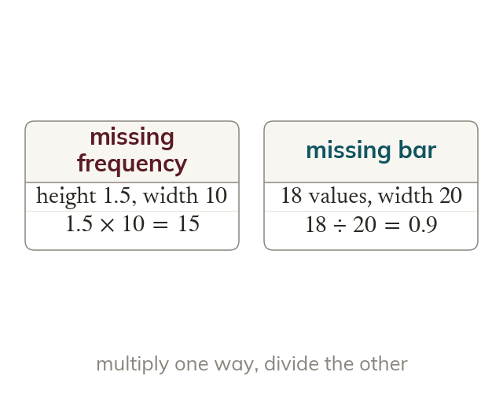
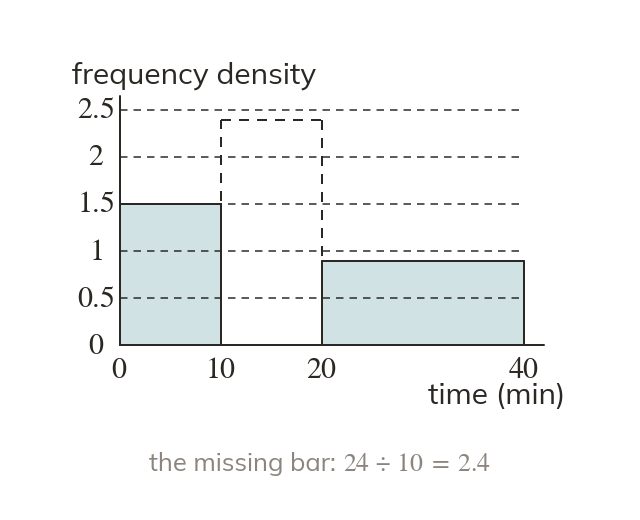
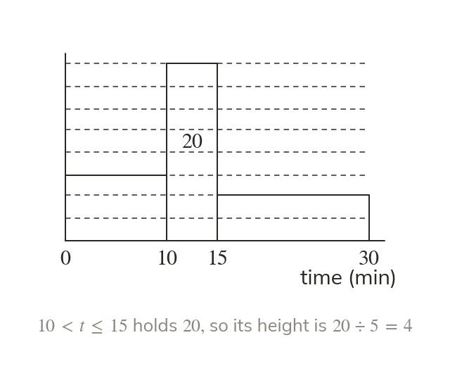
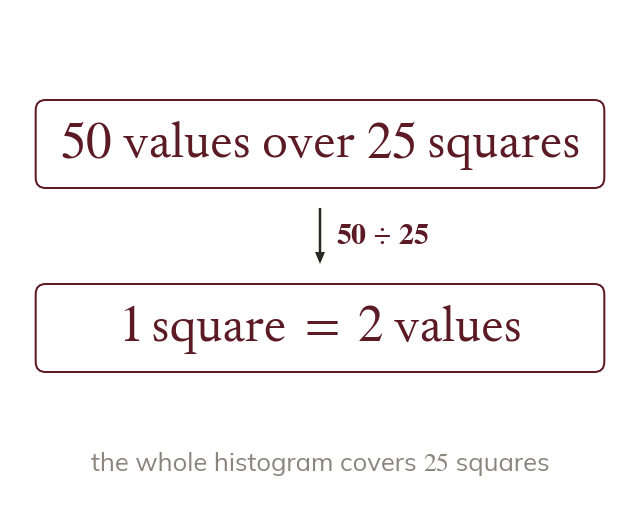
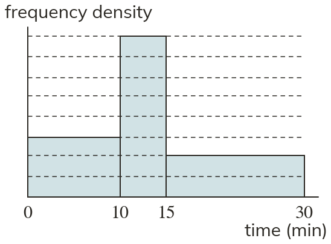

One way multiply, the other divide
A missing frequency is density times width. A missing bar's height is frequency divided by width.
Exam histograms often arrive half-finished: a bar missing, a frequency missing, or no scale at all. One known fact about one bar is enough to rebuild the rest.
Work down the page at your own pace. Write every answer in your book first, then click to check it.
Read each card, then follow the worked examples one step at a time.

A missing frequency is density times width. A missing bar's height is frequency divided by width.

The table and the histogram show the same data. Each fills the other's gaps.
Pick an answer. If it's wrong, the feedback tells you which mistake it was.
Read each card, then follow the worked examples one step at a time.

One bar with a known frequency fixes the density scale. Its density tells you what its height is worth.

The total area of the bars is the total frequency. So a known total also fixes the scale.

Pick an answer. If it's wrong, the feedback tells you which mistake it was.
Log in, then search for a code to practise that skill.
Videos, worksheets and more on each part of this lesson.